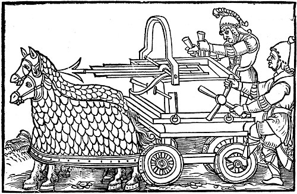
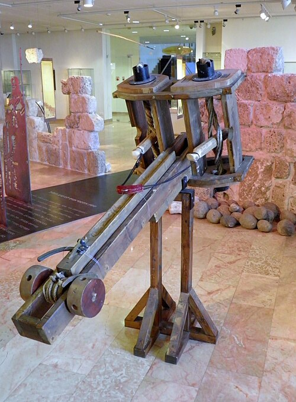
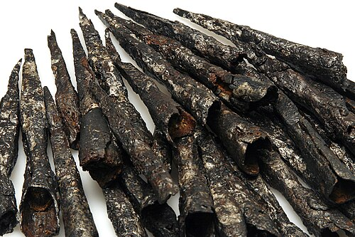
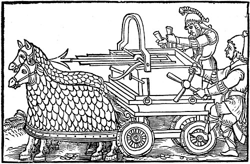
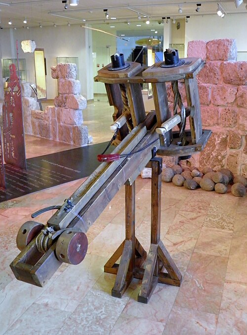
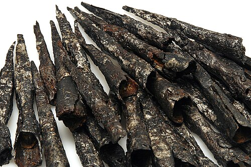

Main
Ballistas were in general very large and very powerful crossbows. Made to fire a 6 foot long arrow or rock with perilous accuracy. The ballista was great for long range attacks and was used in sieges to take out enemy defense and offense. While it took longer to load than a bow, it was far more powerful and could fire a much larger projectile.
Stats
Ballista:
-Range: 300-500 feet
-Projectile: 6 foot long arrow or rock
-Speed: 100-200 feet per second
-Power: 1000-2000 pounds of force
How it's built
Ballistas used strong, elastic woods like yew, elm, or ash to allow the front arm of the ballista to be pulled back and charged with potential energy. This energy was used to pull a tight rope or a sling to shoot bolts or rocks at a high velocity. The ballista was made with a wooden frame that was reinforced with metal to withstand the force of the projectile being fired.
Images
 

<<<<<<< HEAD

=======
>>>>>>> refs/remotes/origin/main


<<<<<<< HEAD

=======
>>>>>>> refs/remotes/origin/main